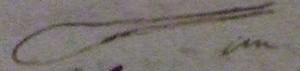
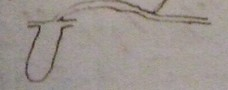

Thomas Beddoes to James Watt, 14 June 1794
Dear Sir
I am truly concerned to hear that sorrow hangs more heavily upon your mind now than immediately after your loss. My principal reason for troubling you for particulars was, as I believe I mentioned, to be able to judge whether the inspiration of fixed air cd be suspected of having done injury. There seems not to be to be the smallest room for such a suspicion. The rapid progress of ulceration, as far as can be judged, occasioned the bursting of a vessel. In ordinary cases of consumption there goes on a very curious process for closing the large blood-vessels. Here there was not time for it. – Since I wrote, I have received several instances of cures, effected by oxygene air; among others, I find one of the most inveterate & severe asthma, in a relation of Ld. Berkely, one of most painful spasms in a niece of Mr Wathen, Surgeon Pall Mall; & one of Chlorosis in a young lady of Northampton. Hence I hope that much benefit will result from the practice: & calculating upon the prejudices of mankind, I think your name will contribute to gain the project a fairer trial, at least as earlier trial, than it wd otherwise have had. There is no difficulty with patients or their friends, but numbers of established physicians are endeavouring to keep it back & though I have never in public or private pretended to any discovery, they are almost as inveterate against me as their predecessors were against the discoverys of the circulation of the blood.
Pray my dear Sir, think a little of oxegene air – what wd be the most convenient form for a cast iron vessel for heating nitre or manganese [sketch of vessel] an iron matrass? or a vessel with a top & tube in it, as [sketch of vessel] 
I have 4 bags of oiled silk here, but they are viscid & and unsavoury – they are closed <at bottom> by a circular piece of wood about 8 inches in diameter, round the circumference is a groove, into which the oiled silk is tied – thus [sketch of apparatus]
Pray what is a good mixture for fastening iron surfaces & making them air-tight? I have used iron filings, sal ammoniac & vinegar, which is expensive.
I hope you will not think me importunate & rude, if I enquire respecting your expt to take away the smell of oiled silk –
I forgot to say in my last that Mr Barr’s letter arrived safe which as it contained nothing particularly requiring an answer I hope will be a sufficient acknowledgment –
I am
Dear Sir
with great thankfulness for your attention, to the cause of humanity & to myself.
Your much obliged sert
Thomas Beddoes
June 14
I have just received 3 pamphlets on ye subject of pneumatic medicine from London. They contain only words, & we want facts. But they show that the subject is gaining attention.
Address: James Watt Esq / Heathfield / Birmingham
Endorsement: Dr Beddoes / June 14th 1794
MS: LoB MS 3219/4/28/05